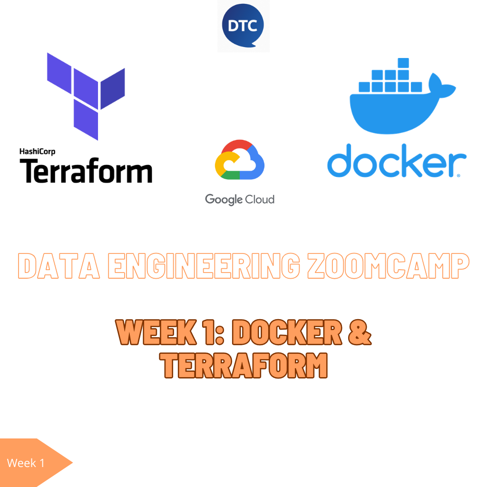

I’ve just enrolled in the DataTalks free Data Engineering zootcamp. It’s a fantastic initiative that has been running for several years, with each cohort occurring annually.
The course is organized weekly, featuring one online session per week. There are optional weekly homework assignments which are reviewed, and the course concludes with a mandatory Data Eng final project, which is required to earn the certification.
In this series of posts, I will be sharing with you my course notes and comments, and also how I’m resolving the homework.
Let’s delve into the essentials of Docker, Dockerfile, and Docker Compose. These three components are crucial in the world of software development, especially when dealing with application deployment and management.
Docker: The Cornerstone of Containerization
Docker stands at the forefront of containerization technology. It allows developers to package applications and their dependencies into containers. A container is an isolated environment, akin to a lightweight, standalone, and secure package of software that includes everything needed to run it: code, runtime, system tools, system libraries, and settings. This technology ensures consistency across multiple development and release cycles, standardizing your environment across different stages.
Dockerfile: Blueprint for Docker images
A Dockerfile is a text document containing all the commands a user could call on the command line to assemble a Docker image. It automates the process of creating Docker images. A Dockerfile defines what goes on in the environment inside your container. It allows you to create a container that meets your specific needs, which can then be run on any Docker-enabled machine.
Docker Compose: Simplifying multi-container applications
Docker Compose is a tool for defining and running multi-container Docker applications. With Compose, you use a YAML file to configure your application’s services, networks, and volumes. Then, with a single command, you create and start all the services from your configuration. Docker Compose works in all environments: production, staging, development, testing, as well as CI workflows.
Why these tools matter?
The combination of Docker, Dockerfile, and Docker Compose streamlines the process of developing, shipping, and running applications. Docker encapsulates your application and its environment, Dockerfile builds the image for this environment, and Docker Compose manages the orchestration of multi-container setups. Together, they provide a robust and efficient way to handle the lifecycle of applications. This ecosystem is integral for developers looking to leverage the benefits of containerization for more reliable, scalable, and collaborative software development.
Get Docker and read there the documentation.
Alright, data engineers, gather around! Why should you care about containerization and Docker? Well, it’s like having a Swiss Army knife in your tech toolkit. Here’s why:
Local Experimentation: Setting up things locally for experiments becomes a breeze. No more wrestling with conflicting dependencies or environments. Docker keeps it clean and easy.
Testing and CI Made Simple: Integration tests and CI/CD pipelines? Docker smoothens these processes. It’s like having a rehearsal space for your code before it hits the big stage.
Batch Jobs and Beyond: While Docker plays nice with AWS Batch, Kubernetes jobs, and more (though that’s a story for another day), it’s a glimpse into the world of possibilities with containerization.
Spark Joy: If you’re working with Spark, Docker can be a game-changer. It’s like having a consistent and controlled playground for your data processing.
Serverless, Stress-less: With the rise of serverless architectures like AWS Lambda, Docker ensures that you’re developing in an environment that mirrors your production setup. No more surprises!
So, there you have it. Containers are everywhere, and Docker is leading the parade. It’s not just a tool; it’s an essential part of the modern software development and deployment process.
You may need to create a network in order the containers communicate. Then, run the Postgres database container. Notice that in order to persist the data, as docker containers would be stateless and reinizialized after each run, you may indicate Docker volumes to persist the PG internal and ingested data.
docker network create pg-network
docker run -it \
-e POSTGRES_USER="root" \
-e POSTGRES_PASSWORD="root" \
-e POSTGRES_DB="ny_taxi" \
-v /Users/jobandtalent/data-eng-bootcamp/ny_taxi_pg_data:/var/lib/postgresql/data \
-p 5437:5432 \
--name pg-database \
--network=pg-network \
postgres:13
``
Let's create and start the PG Admin container:
docker run -it \
-e PGADMIN_DEFAULT_EMAIL="admin@admin.com" \
-e PGADMIN_DEFAULT_PASSWORD="root" \
-p 8080:80 \
--name pgadmin \
--network=pg-network \
dpage/pgadmin4Instead of managing our containers individually, it is way better to manage them from one single source. The docker-compose file allows you to specify the services/containers you want to build and run, from the image to run till the environment variables and volumes.
version: "3.11"
services:
pg-database:
image: postgres:13
environment:
- POSTGRES_USER=root
- POSTGRES_PASSWORD=root
- POSTGRES_DB=ny_taxi
volumes:
- ./ny_taxi_pg_data:/var/lib/postgresql/data
ports:
- 5432:5432
pg-admin:
image: dpage/pgadmin4
environment:
- PGADMIN_DEFAULT_EMAIL=admin@admin.com
- PGADMIN_DEFAULT_PASSWORD=root
ports:
- 8080:80
volumes:
- "pgadmin_conn_data:/var/lib/pgadmin:rw"
volumes:
pgadmin_conn_data:The pipeline script objective is download the ddata from the US taxi rides and insert it in the Postgres database. The script could be as simple as:
import polars as pl
from pydantic_settings import BaseSettings, SettingsConfigDict
from typing import ClassVar
TRIPS_TABLE_NAME = "green_taxi_trips"
ZONES_TABLE_NAME = "zones"
class PgConn(BaseSettings):
model_config = SettingsConfigDict(env_prefix='PG_', env_file='.env', env_file_encoding='utf-8')
user: str
pwd: str
host: str
port: int
db: str
connector: ClassVar[str] = "postgresql"
@property
def uri(self):
return f"{self.connector}://{self.user}:{self.pwd}@{self.host}:{self.port}/{self.db}"
df_ny_taxi = pl.read_csv("https://github.com/DataTalksClub/nyc-tlc-data/releases/download/green/green_tripdata_2019-09.csv.gz")
df_zones = pl.read_csv("https://s3.amazonaws.com/nyc-tlc/misc/taxi+_zone_lookup.csv")
conn = PgConn()
df_zones.write_database(ZONES_TABLE_NAME, conn.uri)
df_ny_taxi.write_database(TRIPS_TABLE_NAME, conn.uri)We have used Polars and Pydantic (v2) libraries. With Polars, we load the data from csvs and also manage how to write it to the database with write_database DataFrame method. We load Pydantic module in order to create a Postgres connection object, that loads the configuration from the environment. We are using for convenience an .env config file, but it is not mandatory. As we will explain in the following chunk of code, we set the env variables on the Dockerfile and they remain accessible from inside the container, being trivial to load them using BaseSettings and SettingsConfigDict.
Now, in order to Dockerize your data pipeline script, that as we just saw it download and ingest the data to Postgres, we need to create a Dockerfile with the specifications of the container. We are using Poetry as a dependency manager, so we need to include those pyproject.toml (multi-pourpose file, used to specify to Poetry the desired module version constraints) and the poetry.lock (specific for Poetry version pin respecting the package version constraints from pyproject.toml). Also, we may include to the container the actual ingest_data.py Python pipeline file.
FROM python:3.11
ARG POETRY_VERSION=1.7.1
WORKDIR /app
COPY ingest_data.py ingest_data.py
COPY .env .env
COPY pyproject.toml pyproject.toml
COPY poetry.lock poetry.lock
RUN pip3 install --no-cache-dir poetry==${POETRY_VERSION} \
&& poetry env use 3.11 \
&& poetry install --no-cache
ENTRYPOINT [ "poetry", "run", "python", "ingest_data.py" ]Just by building the container in our root folder and running it, the ingest_data.py script will be executed, and therefore the data downloaded and persisted on the Postgres database.
Terraform has become a key tool in modern infrastructure management. Terraform, named with a nod to the concept of terraforming planets, applies a similar idea to cloud and local platform infrastructure. It’s about creating and managing the necessary environment for software to run efficiently on platforms like AWS, GCP…
Terraform, developed by HashiCorp, is described as an “infrastructure as code” tool. It allows users to define and manage both cloud-based and on-premises resources in human-readable configuration files. These files can be versioned, reused, and shared, offering a consistent workflow to manage infrastructure throughout its lifecycle. The advantages of using Terraform include simplicity in tracking and modifying infrastructure, ease of collaboration (since configurations are file-based and can be shared on platforms like GitHub), and reproducibility. For instance, an infrastructure set up in a development environment can be replicated in production with minor adjustments. Additionally, Terraform helps in ensuring that resources are properly removed when no longer needed, avoiding unnecessary costs.
So this tool not only simplifies the process of infrastructure management but also ensures consistency and compliance with your infrastructure setup.
However, it’s important to note what Terraform is not. It doesn’t handle the deployment or updating of software on the infrastructure; it’s focused solely on the infrastructure itself. It doesn’t allow modifications to immutable resources without destroying and recreating them. For example, changing the type of a virtual machine would require its recreation. Terraform also only manages resources defined within its configuration files.
Diving into the world of cloud infrastructure can be a daunting task, but with tools like Terraform, the process becomes more manageable and streamlined. Terraform, an open-source infrastructure as code software tool, allows users to define and provision a datacenter infrastructure using a high-level configuration language. Here’s a guide to setting up Terraform for Google Cloud Platform (GCP).
Creating a Service Account in GCP
Before we start coding with Terraform, it’s essential to establish a method for Terraform on our local machine to communicate with GCP. This involves setting up a service account in GCP – a special type of account used by applications, as opposed to individuals, to interact with the GCP services.
Creating a service account is straightforward. Log into the GCP console, navigate to the “IAM & Admin” section, and create a new service account. This account should be given specific permissions relevant to the resources you plan to manage with Terraform, such as Cloud Storage or BigQuery.
Once the service account is created, the next step is to manage its keys. These keys are crucial as they authenticate and authorize the Terraform script to perform actions in GCP. It’s vital to handle these keys with care, as they can be used to access your GCP resources. You should never expose these credentials publicly.
Setting Up Your Local Environment
After downloading the key as a JSON file, store it securely in your local environment. It’s recommended to create a dedicated directory for these keys to avoid any accidental uploads, especially if you’re using version control like Git.
Remember, you can configure Terraform to use these credentials in several ways. One common method is to set an environment variable pointing to the JSON file, but you can also specify the path directly in your Terraform configuration.
Writing Terraform Configuration
With the service account set up, you can begin writing your Terraform configuration. This is done in a file typically named main.tf. In this file, you define your provider (in this case, GCP) and the resources you wish to create, update, or delete.
For instance, if you’re setting up a GCP storage bucket, you would define it in your main.tf file. Terraform configurations are declarative, meaning you describe your desired state, and Terraform figures out how to achieve it. You are ready for terraform init to start with your project.
Planning and Applying Changes
Before applying any changes, it’s good practice to run terraform plan. This command shows what Terraform will do without actually making any changes. It’s a great way to catch errors or unintended actions.
Once you’re satisfied with the plan, run terraform apply to make the changes. Terraform will then reach out to GCP and make the necessary adjustments to match your configuration.
Cleaning Up: Terraform Destroy
When you no longer need the resources, Terraform makes it easy to clean up. Running terraform destroy will remove the resources defined in your Terraform configuration from your GCP account.
Lastly, a word on security: If you’re storing your Terraform configuration in a version control system like Git, be mindful of what you commit. Ensure that your service account keys and other sensitive data are not pushed to public repositories. Using a .gitignore file to exclude these sensitive files is a best practice.
For instance, our main.tf file for creating a GCP Storage Bucket and a Big Query dataset looks like:
terraform {
required_providers {
google = {
source = "hashicorp/google"
version = "5.12.0"
}
}
}
provider "google" {
credentials = var.credentials
project = "concise-quarter-411516"
region = "us-central1"
}
resource "google_storage_bucket" "demo_bucket" {
name = var.gsc_bucket_name
location = var.location
force_destroy = true
lifecycle_rule {
condition {
age = 1
}
action {
type = "AbortIncompleteMultipartUpload"
}
}
}
resource "google_bigquery_dataset" "demo_dataset" {
dataset_id = var.bq_dataset_name
}As you may noticed, some of the values are strings/ints/floats but others are var.* values. In the next section we are talking about keeping the Terraform files tidy with the usage of variables.
Terraform variables offer a centralized and reusable way to manage values in infrastructure automation, separate from deployment plans. They are categorized into two main types: input variables for configuring infrastructure and output variables for retrieving information post-deployment. Input variables define values like server configurations and can be strings, lists, maps, or booleans. String variables simplify complex values, lists represent indexed values, maps store key-value pairs, and booleans handle true/false conditions.
Output variables are used to extract details like IP addresses after the infrastructure is deployed. Variables can be predefined in a file or via command-line, enhancing flexibility and readability. They also support overriding at deployment, allowing for customized infrastructure management. Sensitive information can be set as environmental variables, prefixed with TF_VAR_, for enhanced security. Terraform variables are essential for clear, manageable, and secure infrastructure plans.
In our case, we are using variables.tf looks as:
variable "credentials" {
default = "./keys/my_creds.json"
}
variable "location" {
default = "US"
}
variable "bq_dataset_name" {
description = "BigQuery dataset name"
default = "demo_dataset"
}
variable "gcs_storage_class" {
description = "Bucket Storage class"
default = "STANDARD"
}
variable "gsc_bucket_name" {
description = "Storage bucket name"
default = "terraform-demo-20240115-demo-bucket"
}We are parametrizing here the credentials file, buckets location, storage class, bucket name…
As we’ve discussed, mastering Terraform variables is a key step towards advanced infrastructure automation and efficient code management.
For more information about Terraform variables, you can visit this post.
´
This was the content I gathered for the very first week of the DataTalks Data Engineering bootcamp. I’ve definetively enjoyed it and I’m excited to continue with Week 2.
If you want to stay updated, homework the homework along with explanations…